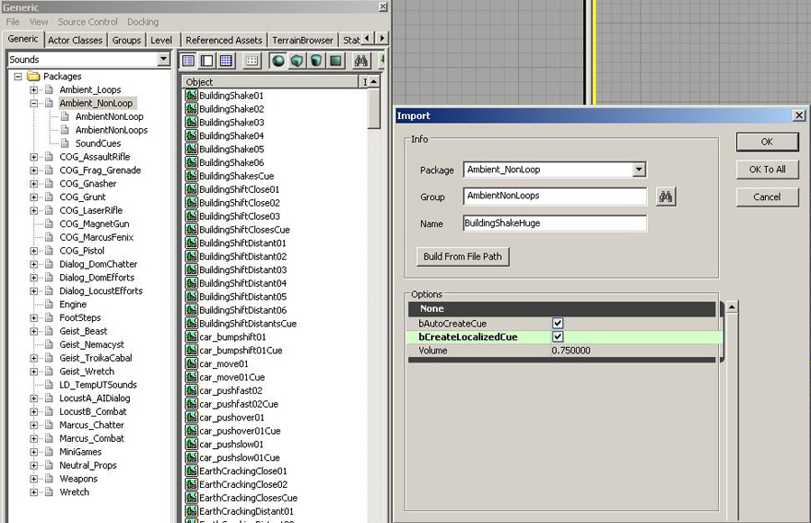
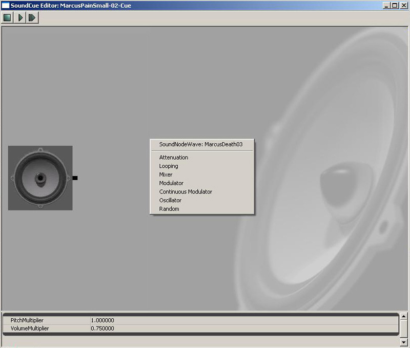
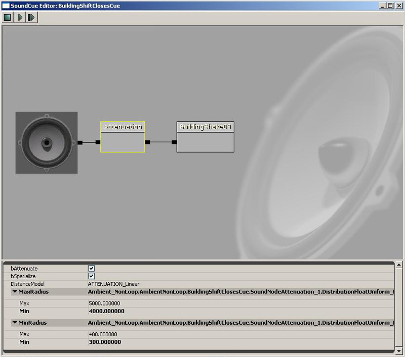
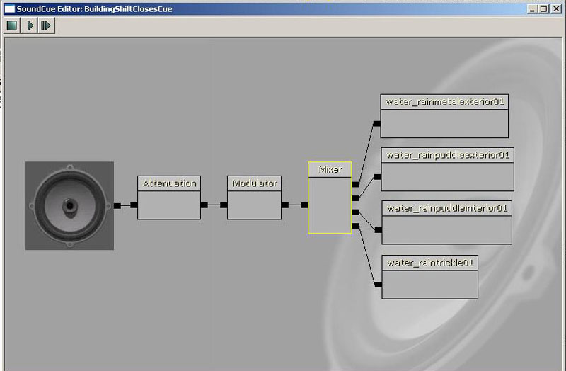
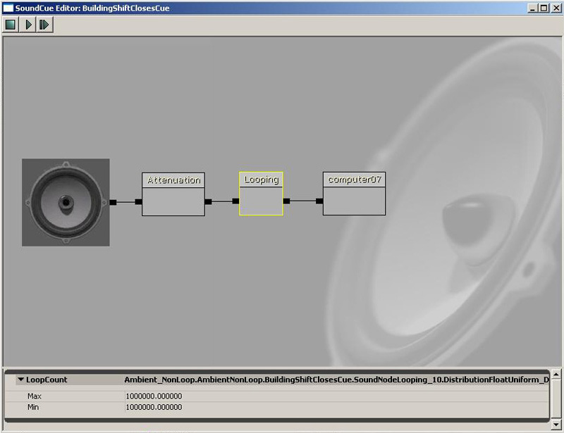
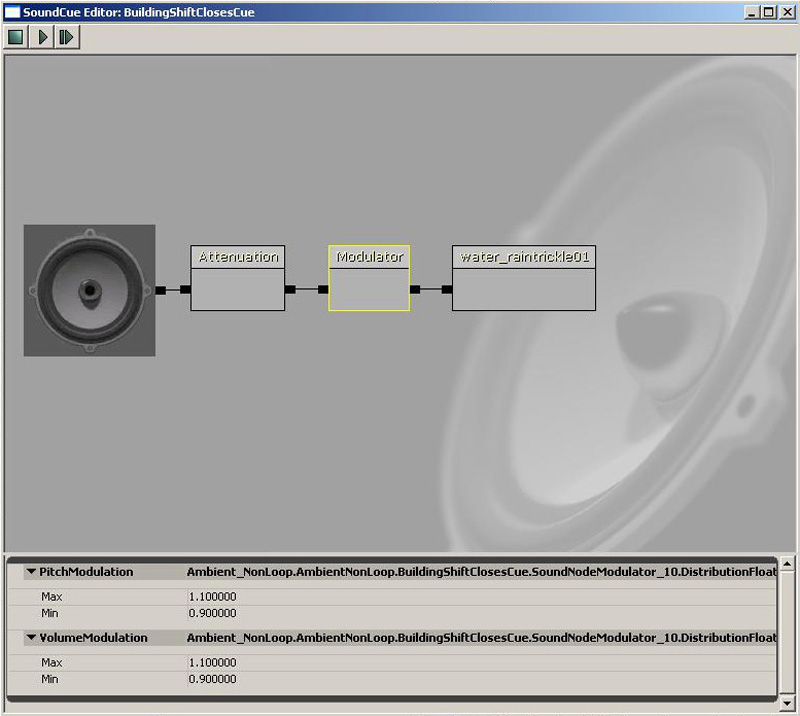
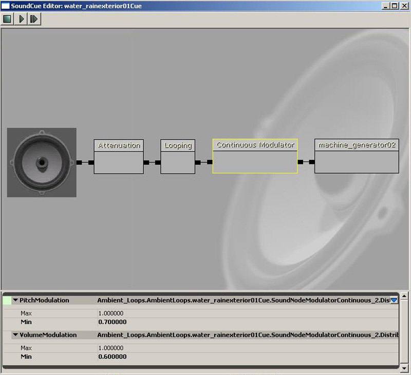
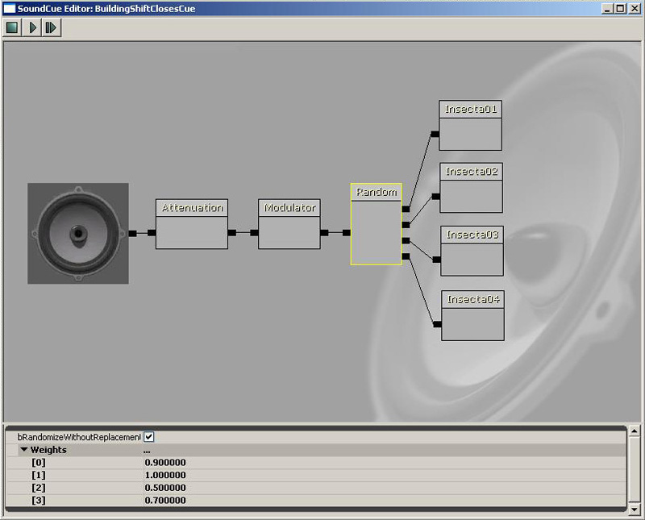
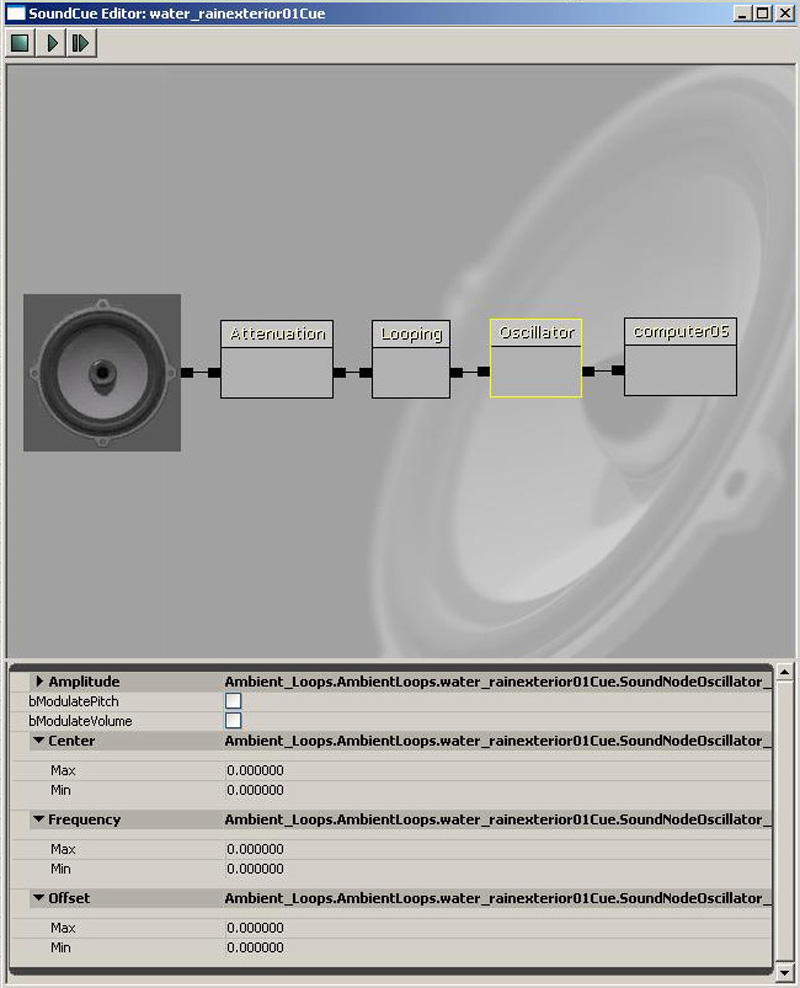
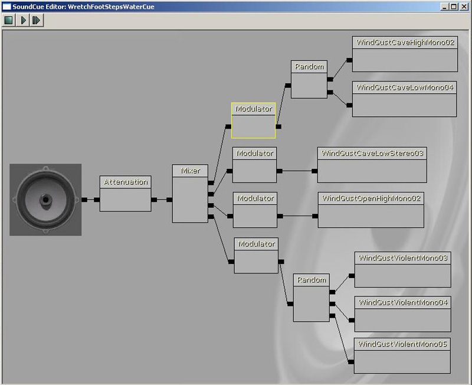

UDN
Search public documentation:
SoundCueEditorUserGuideJP
English Translation
中国翻译
한국어
Interested in the Unreal Engine?
Visit the Unreal Technology site.
Looking for jobs and company info?
Check out the Epic games site.
Questions about support via UDN?
Contact the UDN Staff
中国翻译
한국어
Interested in the Unreal Engine?
Visit the Unreal Technology site.
Looking for jobs and company info?
Check out the Epic games site.
Questions about support via UDN?
Contact the UDN Staff
Unreal Sound Cue エディタユーザガイド
ドキュメントの概要 : サウンドのインポートから SoundCues の生成まで、 Unreal Sound Cue エディタの利用法の概要。 ドキュメントの変更ログ : Mike Larson により作成。 Richard Nalezynski? により維持。はじめに
Sound Cue エディタは、 Unreal Engine においてオーディオ関連の作業を行う場合に使用するツールです。Sound Cue エディタの使用法
パッケージ
すべてのオーディオファイルと SoundCues は、.upk パッケージ内にインポートされ保存されます。Generic ブラウザのインポート関数が、 .upk パッケージの生成に利用されます。Sound Cue エディタのオープン

- Generic ブラウザ でプルダウンタブを使用して [Sounds] (サウンド)を選択してください、ここでは、現在ロードされているパッケージを表示します。
- 新しいパッケージを生成するため、 [File] (ファイル)メニューの [Import] (インポート)を選択して、オーディオファイルをインポートしてください。
- Import Audio (オーディオのインポート)ダイアログが開きます ; インポートするオーディオファイルを指定して、それらのファイルを追加するために Open (開く)を選択してください。
- Import Property (プロパティのインポート)ダイアログが開きます。以下の情報を入力してください :
- Package (パッケージ) - パッケージの名前
- Group (グループ) - グループの名前、グループは組織およびバッチ制御に利用されます。
- Name (名前) - オーディオファイルの名前。
- AutoCreateCue (自動生成キュー) - チェックされている時は、インポートは、オーディオファイルに対して SoundCue を自動生成します。
- CreateLocalizedCue (ローカライズしたキューの生成) - チェックされているときは、インポートは、減衰ノードでファイルに対して SoundCue を自動生成します。
- Volume (ボリューム)- Speaker Nodes Cue(スピーカーノードキュー) のボリュームを設定します。
- インポート行う個々のファイルのプロパティを修正するために [OK] を選択してください ; または、インポートされたすべての SoundCues に現在のプロパティを適用するために [OK to All] (すべてOK) を選択してください。
- Generic ブラウザ参照 の Sound\Packages の下に新規に生成されたパッケージが表示されます。ディスクに保存するため、そのパッケージをハイライト表示して [File] (ファイル) メニューから [Save] (保存)を選択してください。
- Generic ブラウザ のパッケージ上をダブルクリックすることで、オブジェクトブラウザ内にすべてのオーディオファイルと SoundCues を一覧表示します。オブジェクトブラウザで [ファイル] + [キュー] をダブルクリックするとオーディオを再生します。 キューを右クリックするとSound Cue エディタへのアクセスが可能になります。
Sound Cue エディタの概要
Sound Cue エディタのレイアウト
UE3 におけるオーディオの再生動作は SoundCues で定義されています。任意の SoundCue 上で右クリックしてSound Cue エディタを選択すると、専用のSound Cue エディタがアクタブラウザ内に表示されます。
| 1 | メニューバー および ツールバー |
| 2 | オーディオノードグラフ |
| 3 | プロパティペイン |
メニューバー
ツールバー
オーディオノードグラフ
このインターフェースは、オーディオ制御モジュールとオーディオファイルを示す相互に接続されたブロックノードを使って、オーディオの信号経路を右から左に表示します。モジュールを任意の順序または組み合わせで接続して、信号のパッチを実現するために仮想パッチケーブルが利用されます。スピーカーアイコンは、ゲーム中に聴くオーディオの最終的な出力を示し、いつでも信号パスの左端に位置しています。ソースオーディオファイル(Sound Node Wave) は、常に信号パスの右端に位置しています。再生を試行したい場合は、エディタウィンドウの上部にあるプレイボタンを使用してください。一つの矢印はソースの Sound Node Wave を再生し、二重の矢印は SoundCues の最終的な出力を再生します。 Sound Cue エディタのどこででも右クリックして要求するノードを選択することで、様々なオーディオノードが追加できます。 SoundCue Sound Cue エディタで生成された配置は、 SoundCue として保存されます。 Sound Node Wave Sound Node Wave は、Sound Cue エディタでインポートされたオーディオファイルのブロック表現です。Generic ブラウザのオブジェクトウィンドウで要求するオーディオファイルを選択した時、Sound Cue エディタのどこでも右クリックすることで、 SoundCue に追加できます。 Sound Node Wave には、ボリュームとピッチの制御が存在しますが、パラメータの変更が同じ Sound Node Waves を利用している他のキューに影響するため、これらはSound Cue エディタでは編集できません。しかし、インポートとグループバッチングシステムでは編集可能です。すべての Sound Nodes のデフォルト値は、ボリュームは 0.75 、ピッチは 1.00 です。 Speaker Node(スピーカーノード) Sound Cue エディタ中のスピーカーのアイコンは、Speaker Node(スピーカーノード) です。この上でクリックすると相対的なキューボリュームを管理するために使用される「キューボリューム」 + 「ピッチ設定」を表示します。この設定はキュー内に含まれたすべてのオーディオの出力に影響します。複数の Sound Node Wave が、ミキサーまたはランダムノードで使用された時には、 Modulator Nodes(モジュレータノード) を追加して、レイヤごとに独立のボリュームとピッチの制御を行うことができます。プロパティペイン
制御
マウス制御
キーボード制御
ホットキー
Sound Cues の作業
Attenuation Node(減衰ノード)
Attenuation Node(減衰ノード) は、 立体音響、減衰および半径のプロパティを制御するために使用されます。
| Attenuation (減衰) | ディスタンスに応じてフェードアウトします、チェックボックスは減衰の オン \ オフ をトグルします。 |
| Spatialize (空間定位) | 3D 空間内に定位します、チェックボックスは spatialization(空間定位)の オン \ オフ をトグルします。 |
| Distance Model (ディスタンスモデル) | 現在選択可能な減衰カーブは Linear(リニア) だけです |
| MinRadius (最小半径) | サウンドはオリジンと MinR の間を 100% ボリュームとして再生されます、 MinR を 0.0 に設定することで直線的なリニアフェードが作成されます 。 |
| MaxRadius (最大半径) | サウンドは MinR と MaxR の間で 100% から 0% までフェードします。サウンドが無音となる外部半径は MaxR です。 |
Mixer Node(ミキサーノード)
Mixer Node(ミキサーノード) は、複数の Sound Node Waves を同時にトリガを掛けるために利用されます。 Mixer Node(ミキサーノード) を右クリックして Add Input (入力の追加) を選択し、個々のオーディオファイルに対する入力を追加します。 Sound Nodes(サウンドノード) を Mixer Node(ミキサーノード) の入力に直接接続可能ですが、レイアーごとに独立制御するために間にノードを挟むこともできます。
Looping Node(ループノード)
Looping Node(ループノード) は、 Sound Node Wave のループを設定するために使用されます。 Loop Count Max and Min(ループ回数最大値および最小値) が唯一調整可能なパラメータですが、デフォルトでは仮想的にエンドレスの再生をを提供するために大きな値となっています。しかし希望する特定のループ数を設定することもできます。 Mixer Node(ミキサーノード) と組み合わせて使用したときは、複数のオーディオファイルを独立にループすることが可能です。
Modulator Node(モジュレーターノード)
Modulator Node(モジュレーターノード) はランダムなボリュームおよびピッチの変調を追加するために使用されます。それぞれ、ランダム化の範囲を決めるための Max(最大値) および Min(最小値) を持ち、 Cue にトリガが掛かったときに、その範囲から値をランダム選択します。 Max(最大値) および Min(最小値) を同じ値に設定し、 Modulator Node(モジュレーターノード) で 「ボリューム + ピッチ」を調整することができます。また、キュー内に存在する複数の Sound Node Waves の相対的なボリュームを調整するためにも使用できます。 Modulator Node(モジュレーターノード) が Looping Node(ループノード) と組み合わせて使われた場合は、 Cue のトリガが再度掛かったときにランダム選択を行い、ループの繰り返しでは行いません。
Continuous Modulator Node(連続モジュレーターノード)
Continuous Modulator Node(連続モジュレーターノード) は、リアルタイムにボリュームとピッチの変調を制御するためのゲームプレイ時パラメータを利用可能にします。典型的な例は、エンジン音のピッチに対応して乗り物の速度を利用するものです。このモジュレーターは、要求された目的のためにコード内でフックを掛ける必要があり、Sound Cue エディタ内の独立した関数ではありません。
Random Node(ランダムノード)
Random Node(ランダムノード) は、利用する可能性のある Sound Node Waves のグループから一つの Sound Node Wave にランダムにトリガを掛けるために利用されます。Weight(重み付け) は、アクタにある他の Sound Node Waves に対してトリガされる Sound Node Waves の確率を制御します。[RandomWithoutReplacement](置換なしでランダム)チェックボックスは、次の繰り返しまでに可能性のあるすべての Sound Nodes(サウンドノード) リストを再生します。 「Random Node」(ランダムノード) 上で右クリックし、「AddInput」 (入力の追加)を選択して、個々のオーディオファイルに対する入力が追加されます。 Sound Node Waves は、Random Node(ランダムノード) に直接接続することもできますが、追加制御のため、間にノードを追加することもできます。
Oscillator Node(オシレーターノード)
Oscillator Node(オシレーターノード) は、時間経過に応じ、連続的なピッチおよびボリュームのオシレーションを追加するために利用されます。これは、ループサウンドで実行中の動作に応じてより大きくしたものを作成するときに最も役立ちます。
例
以下は、より複雑な SoundCue 配置の例です :
再トリガ時にはランダムに変化をつけたトリガに応じて、 4 つのオーディオファイルを同時に再生します。 再トリガ時にはランダムに変化をつけたトリガに応じて、 1 つのオーディオファイルを再生します。
再トリガ時にはランダムに変化をつけたトリガに応じて、 1 つのオーディオファイルを再生します。
 ランダムにトリガを掛けられたオーディオファイルの2つの組をミックスします
ランダムにトリガを掛けられたオーディオファイルの2つの組をミックスします